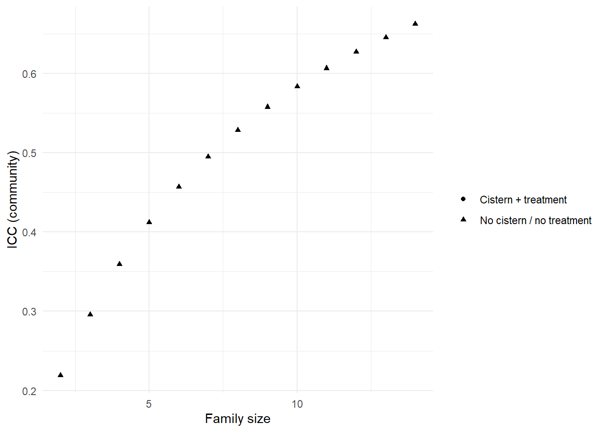
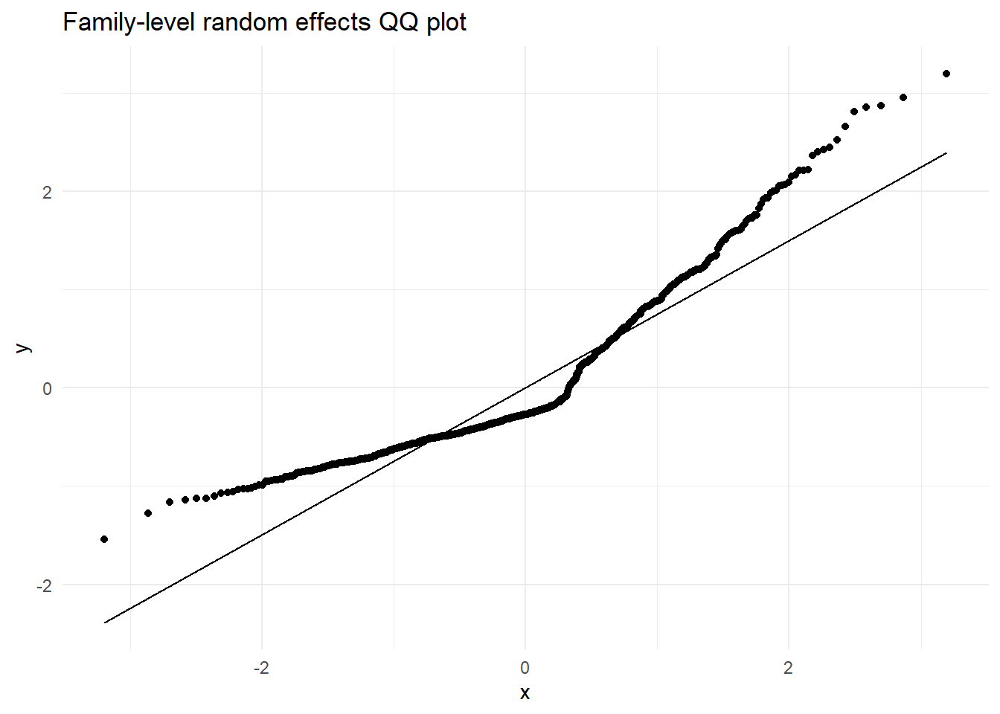
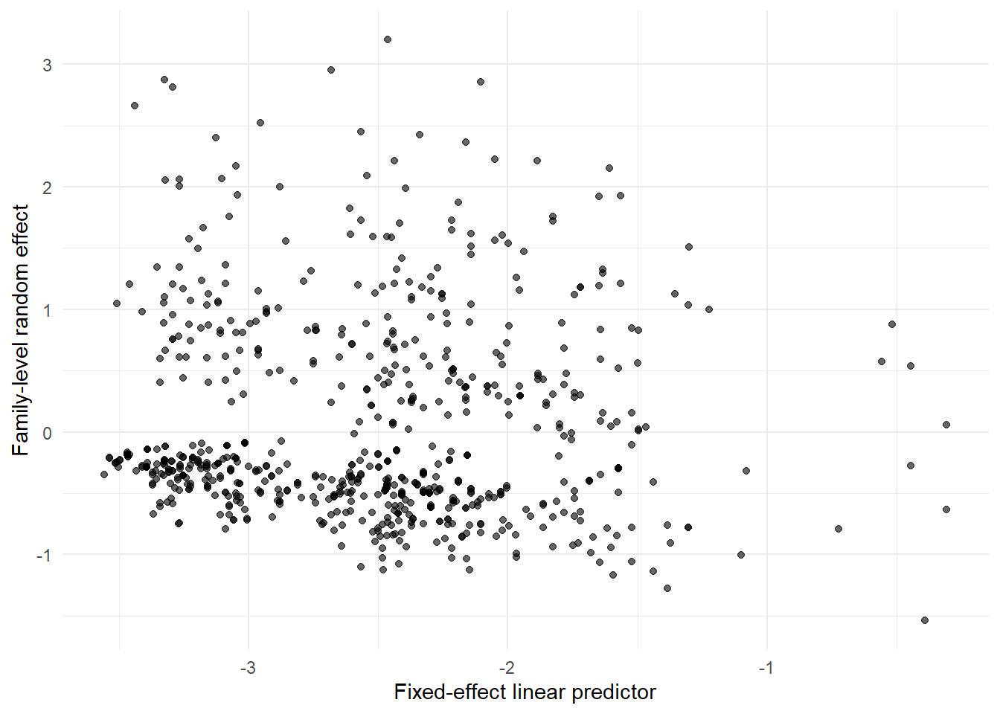

library(dplyr)
library(tidyr)
library(tibble)
library(haven)
library(forcats)
library(ggplot2)
library(lme4)
library(glmmTMB)
library(ordinal)
library(broom.mixed)
library(broom)
library(performance)
library(purrr)
library(glue)
library(lmtest)
library(sandwich)
library(geepack)
theme_set(theme_minimal())
data_dir <- file.path("..", "mer_data_stata")
brazil_smpl <- read_dta(file.path(data_dir, "brazil_smpl.dta")) |>
mutate(across(where(haven::is.labelled), haven::as_factor))18 SME Chapter 17: Mixed Models for Discrete Data
Note
This chapter reproduces and expands upon the analyses from the original Methods in Epidemiologic Research (MER) Chapter 22 (Dohoo, Martin, & Stryhn, 2012) using R with data sourced from ../mer_data_stata/. The chapter covers generalized linear mixed models (GLMMs) - essential methods for analyzing discrete outcomes (binary, count, ordinal) in clustered data structures.
18.1 Replication Notes
- Data dependencies:
../mer_data_stata/brazil_smpl.dta,brazil_smplx.dta(if available), andbrazil.dta. - Required R packages:
dplyr,tidyr,tibble,haven,forcats,ggplot2,lme4,glmmTMB,ordinal,broom.mixed,broom,performance,purrr,glue,lmtest,sandwich,geepack. - Setup tips: Install via
install.packages(c("dplyr","tidyr","tibble","haven","forcats","ggplot2","lme4","glmmTMB","ordinal","broom.mixed","broom","performance","purrr","glue","lmtest","sandwich","geepack")). - Execution: Run the notebook sequentially; all GLMM, meta-regression-style comparisons, and residual diagnostics are recomputed using the supplied datasets.
18.2 Theoretical Background
Understanding Generalized Linear Mixed Models (GLMMs)
Before we analyze discrete outcomes with clustering, let’s understand what GLMMs are and why we need them. GLMMs combine the flexibility of generalized linear models with the ability to handle clustered data structures (Dohoo, Martin, & Stryhn, 2012; Kirkwood & Sterne, 2003):
18.2.1 What are GLMMs?
Generalized Linear Mixed Models (GLMMs) combine two ideas: 1. Generalized Linear Models (GLMs): For non-normal outcomes (like binary, counts, ordinal) 2. Mixed-effects models: For clustered/hierarchical data
Think of it like: Taking logistic regression (for binary outcomes) or Poisson regression (for counts) and adding random effects to account for clustering.
18.2.2 Why We Need GLMMs
When you have: - Discrete outcomes (yes/no, counts, categories) that need GLMs - Clustered data (people in families, patients in clinics) that need random effects
You need GLMMs! Regular GLMs ignore clustering. Regular mixed models assume normal outcomes. GLMMs handle both.
18.2.3 Types of GLMMs
18.2.4 1. Random-Intercept Models
Random intercepts allow each cluster to have its own baseline. Like: “Each family has its own baseline risk of diarrhea, but the effect of treatment is the same for all families.”
Example: Modeling diarrhea (yes/no) in families, where families are clustered within communities.
18.2.5 2. Random-Slope Models
Random slopes allow the effect of predictors to vary by cluster. Like: “The effect of treatment differs by clinic - some clinics show a strong effect, others show a weak effect.”
18.2.6 3. Multi-Level GLMMs
Multi-level means multiple levels of clustering. Like: - Level 1: Individuals - Level 2: Families - Level 3: Communities - Level 4: Municipalities
Each level can have its own random effects.
18.2.7 Key Concepts
18.2.8 1. Link Functions
GLMMs use link functions (like logit for binary, log for counts) to transform outcomes to a scale where relationships are linear.
18.2.9 2. Variance Components
GLMMs partition variance into: - Between-cluster variance: How much clusters differ - Within-cluster variance: How much individuals differ within clusters - Residual variance: Unexplained variation
18.2.10 3. Intraclass Correlation (ICC)
ICC for binary outcomes measures what proportion of variance is between clusters. It’s more complex than for continuous outcomes because of the link function.
18.2.11 4. Prediction Types
GLMMs can give different types of predictions: - Conditional: Predictions for specific clusters (like “this family’s risk”) - Marginal: Population-averaged predictions (like “average risk across all families”)
18.2.12 Model Fitting Challenges
GLMMs are harder to fit than regular models because: - No closed-form solution: Need numerical methods (like quadrature) - Computational intensity: Can be slow for large datasets or complex models - Convergence issues: Models might not converge
18.2.13 Model Diagnostics
We check GLMMs by looking at: - Random effects: Should be normally distributed - Residuals: Harder to define for discrete outcomes, but we can check patterns - Model fit: AIC, BIC, likelihood ratio tests
18.2.14 When to Use GLMMs
Use GLMMs when you have: - Discrete outcomes (binary, counts, ordinal) - Clustered data (hierarchical structure) - Need to account for both
Alternatives: - GEE: For population-averaged estimates (doesn’t model cluster effects) - Fixed effects: When you have few clusters and want to estimate each one
In simple terms: GLMMs are for discrete outcomes (like yes/no or counts) that are clustered (like families or clinics). They combine the flexibility of GLMs (for non-normal outcomes) with random effects (for clustering). They’re more complex than regular models but necessary when you have both discrete outcomes and clustering. They let us get correct answers from complex data structures.
18.3 Setup
What is this section doing?
This section prepares for mixed-effects models with discrete outcomes (like yes/no, or counts). Think of it like analyzing binary or count data that’s clustered:
- Loading libraries: Getting tools for generalized linear mixed models (GLMMs)
- Reading data: Opening clustered data with discrete outcomes (like diarrhea: yes/no)
- Data preparation: Organizing data for mixed-effects analysis with binary/count outcomes
In simple terms: We’re preparing to analyze discrete outcomes (like “does the family have diarrhea?”) that are clustered (families within communities). This requires special methods because regular mixed models are for continuous outcomes.
18.4 Example 22.1: Random-Effects Logistic Regression (Two-Level)
What is this section doing?
This section fits a logistic regression model that accounts for clustering. Think of it like predicting yes/no outcomes while accounting for groups:
- Aggregating to family level: Converting individual diarrhea to family-level (does any family member have diarrhea?)
- Random-effects logistic regression: A model that predicts binary outcomes (yes/no) while allowing each group (community) to have its own baseline
- Random intercepts: Each community can have a different baseline probability of diarrhea
In simple terms: We’re predicting whether a family has diarrhea (yes/no) while accounting for the fact that families in the same community might be more similar to each other. The model allows each community to have its own baseline risk.
# Convert diarr to 0/1 numeric (for max() calculation and binomial model)
# max() doesn't work on factors, and binomial models need 0/1 values
if (is.factor(brazil_smpl$diarr)) {
# Convert factor to 0/1: check if any level indicates "yes" or positive
diarr_levels <- levels(brazil_smpl$diarr)
# Find which level represents "yes" (diarrhea present)
yes_level_idx <- which(grepl("yes|1|true|present", diarr_levels, ignore.case = TRUE))[1]
if (is.na(yes_level_idx)) {
# If no clear "yes" level, assume higher numeric level is "yes"
yes_level_idx <- length(diarr_levels)
}
brazil_smpl_prep <- brazil_smpl |>
mutate(diarr_num = if_else(as.numeric(diarr) == yes_level_idx, 1L, 0L))
} else {
# Already numeric, convert to 0/1
brazil_smpl_prep <- brazil_smpl |>
mutate(diarr_num = if_else(as.numeric(diarr) > 0, 1L, 0L))
}
# Now max() will give 0 or 1 (family has diarrhea if any member has it)
family_level <- brazil_smpl_prep |>
arrange(fam, comm) |>
group_by(fam, comm, mun) |>
summarise(
famdiarr = max(diarr_num, na.rm = TRUE), # This will be 0 or 1
cistern = first(cistern),
.groups = "drop_last"
) |>
mutate(within_f = row_number()) |>
ungroup()
# Ensure famdiarr is integer 0/1 for binomial model
family_sample <- family_level |>
filter(within_f == 1) |>
mutate(famdiarr = as.integer(famdiarr))
# Final validation: ensure all values are 0 or 1
if (any(!family_sample$famdiarr %in% c(0, 1), na.rm = TRUE)) {
warning("famdiarr contains values outside 0/1. Converting to 0/1.")
family_sample$famdiarr <- ifelse(family_sample$famdiarr > 0, 1L, 0L)
}
contingency <- family_sample |>
count(famdiarr, cistern) |>
pivot_wider(names_from = cistern, values_from = n, values_fill = 0)
logistic_comm <- glmer(
famdiarr ~ cistern + (1 | comm),
data = family_sample,
family = binomial()
)
tidy(logistic_comm, effects = "fixed", conf.int = TRUE)# A tibble: 2 × 8
effect term estimate std.error statistic p.value conf.low conf.high
<chr> <chr> <dbl> <dbl> <dbl> <dbl> <dbl> <dbl>
1 fixed (Intercept) -0.151 0.135 -1.12 0.262 -0.416 0.113
2 fixed cisternYes -0.698 0.179 -3.90 0.0000972 -1.05 -0.347var_comm <- VarCorr(logistic_comm)$comm[1]
icc_logit <- var_comm / (var_comm + (pi^2 / 3))
tibble(
component = c("Community variance", "Logistic residual variance", "ICC"),
value = c(var_comm, pi^2 / 3, icc_logit)
)# A tibble: 3 × 2
component value
<chr> <dbl>
1 Community variance 0.505
2 Logistic residual variance 3.29
3 ICC 0.13318.5 Example 22.3: Random-Effects Poisson Regression
What is this section doing?
This section models count data (like number of cases) using Poisson regression with random effects. Think of it like predicting how many cases occur, accounting for clustering:
- Aggregating to family level: Counting cases per family (like “how many family members got diarrhea?”)
- Poisson regression: Models count outcomes (0, 1, 2, 3… cases)
- Random effects: Accounts for clustering at the community level
- Offset: Adjusts for family size (like accounting for larger families having more opportunities for cases)
In simple terms: We’re modeling how many diarrhea cases occur per family, accounting for the fact that families are clustered within communities. Larger families might have more cases just because they’re larger, so we adjust for that.
# Convert diarr to numeric for sum() calculation
# sum() doesn't work on factors
if (is.factor(brazil_smpl$diarr)) {
# Convert factor to 0/1 for counting cases
diarr_levels <- levels(brazil_smpl$diarr)
yes_level_idx <- which(grepl("yes|1|true|present", diarr_levels, ignore.case = TRUE))[1]
if (is.na(yes_level_idx)) {
yes_level_idx <- length(diarr_levels)
}
brazil_smpl_counts <- brazil_smpl |>
mutate(diarr_num = if_else(as.numeric(diarr) == yes_level_idx, 1L, 0L))
} else {
brazil_smpl_counts <- brazil_smpl |>
mutate(diarr_num = if_else(as.numeric(diarr) > 0, 1L, 0L))
}
# Check what water treatment variable exists
water_var <- NULL
possible_water_names <- c("water_treat_chlor", "water_treat", "water_tx", "water", "chlor")
for (name in possible_water_names) {
if (name %in% names(brazil_smpl_counts)) {
water_var <- name
break
}
}
# If not found, look for pattern
if (is.null(water_var)) {
water_candidates <- grep("water|chlor|treat", names(brazil_smpl_counts), ignore.case = TRUE, value = TRUE)
if (length(water_candidates) > 0) {
water_var <- water_candidates[1]
}
}
# Create water_tx column in the data if variable exists, otherwise use dummy
if (!is.null(water_var)) {
brazil_smpl_counts$water_tx_temp <- brazil_smpl_counts[[water_var]]
} else {
warning("Water treatment variable not found. Creating dummy variable.")
brazil_smpl_counts$water_tx_temp <- 0L
}
family_counts <- brazil_smpl_counts |>
arrange(fam, comm) |>
group_by(fam, comm, mun) |>
summarise(
famcases = sum(diarr_num, na.rm = TRUE), # Sum of 0/1 values = count of cases
cistern = first(cistern),
water_tx = first(water_tx_temp),
fam_n = first(fam_n),
.groups = "drop_last"
) |>
mutate(
logn = log(fam_n),
within_f = row_number()
) |>
ungroup() |>
mutate(
cistern = factor(cistern),
water_tx = factor(water_tx)
)
family_counts_sample <- family_counts |> filter(within_f == 1)
poisson_comm <- glmer(
famcases ~ cistern + water_tx + offset(logn) + (1 | comm),
data = family_counts_sample,
family = poisson()
)
tidy(poisson_comm, effects = "fixed", conf.int = TRUE, exponentiate = TRUE)# A tibble: 3 × 8
effect term estimate std.error statistic p.value conf.low conf.high
<chr> <chr> <dbl> <dbl> <dbl> <dbl> <dbl> <dbl>
1 fixed (Intercept) 0.191 0.0238 -13.3 2.27e-40 0.150 0.244
2 fixed cisternYes 0.555 0.0615 -5.31 1.07e- 7 0.447 0.690
3 fixed water_txYes 0.734 0.0818 -2.77 5.54e- 3 0.590 0.913sigma2 <- VarCorr(poisson_comm)$comm[1]
sigma <- sqrt(sigma2)
fixefs <- fixef(poisson_comm)
icc_curve <- family_counts_sample |>
mutate(
logn = log(fam_n),
bx_none = fixefs["(Intercept)"] + logn,
bx_both = fixefs["(Intercept)"] + fixefs["cistern1"] + fixefs["water_tx1"] + logn,
mean_none = exp(bx_none + sigma2 / 2),
var_none = exp(2 * bx_none + 2 * sigma2) - exp(2 * bx_none + sigma2),
icc_none = var_none / (var_none + mean_none),
mean_both = exp(bx_both + sigma2 / 2),
var_both = exp(2 * bx_both + 2 * sigma2) - exp(2 * bx_both + sigma2),
icc_both = var_both / (var_both + mean_both)
) |>
select(fam_n, icc_none, icc_both) |>
distinct()
icc_curve |>
pivot_longer(cols = starts_with("icc"), names_to = "scenario", values_to = "icc") |>
mutate(scenario = recode(scenario, icc_none = "No cistern / no treatment", icc_both = "Cistern + treatment")) |>
ggplot(aes(x = fam_n, y = icc, shape = scenario)) +
geom_point(colour = "black") +
labs(x = "Family size", y = "ICC (community)", shape = "") +
theme_minimal()
18.6 Example 22.4: Four-Level Logistic / Probit Models
What is this section doing?
This section fits models with four levels of clustering (individual, family, community, municipality). Think of it like a Russian nesting doll - individuals within families, families within communities, communities within municipalities:
- Four-level structure: Accounts for clustering at multiple levels simultaneously
- Logit vs Probit: Two different link functions (ways to model probabilities)
- ICC calculation: Shows how much variation occurs at each level
In simple terms: We’re accounting for clustering at multiple levels. People in the same family are similar, families in the same community are similar, and communities in the same municipality are similar. This model accounts for all of that.
# Find water treatment variable
water_var <- NULL
possible_water_names <- c("water_treat_chlor", "water_treat", "water_tx", "water", "chlor")
for (name in possible_water_names) {
if (name %in% names(brazil_smpl)) {
water_var <- name
break
}
}
# If not found, look for pattern
if (is.null(water_var)) {
water_candidates <- grep("water|chlor|treat", names(brazil_smpl), ignore.case = TRUE, value = TRUE)
if (length(water_candidates) > 0) {
water_var <- water_candidates[1]
}
}
# Convert diarr to 0/1 numeric for binomial model
if (is.factor(brazil_smpl$diarr)) {
diarr_levels <- levels(brazil_smpl$diarr)
yes_level_idx <- which(grepl("yes|1|true|present", diarr_levels, ignore.case = TRUE))[1]
if (is.na(yes_level_idx)) {
yes_level_idx <- length(diarr_levels)
}
brazil_multi <- brazil_smpl |>
mutate(
diarr = if_else(as.numeric(diarr) == yes_level_idx, 1L, 0L),
age5 = as.integer(age <= 5),
smsize = (as.numeric(m_pop_families) - 2000) / 1000
)
} else {
brazil_multi <- brazil_smpl |>
mutate(
diarr = if_else(as.numeric(diarr) > 0, 1L, 0L),
age5 = as.integer(age <= 5),
smsize = (as.numeric(m_pop_families) - 2000) / 1000
)
}
# Create water_tx column if variable exists, otherwise use dummy
if (!is.null(water_var)) {
brazil_multi$water_tx <- brazil_multi[[water_var]]
} else {
warning("Water treatment variable not found. Creating dummy variable.")
brazil_multi$water_tx <- 0L
}
# Drop NA for variables that exist
drop_vars <- c("diarr", "cistern", "age5", "smsize")
if (!is.null(water_var)) {
drop_vars <- c(drop_vars, water_var)
} else {
drop_vars <- c(drop_vars, "water_tx")
}
brazil_multi <- brazil_multi |>
drop_na(all_of(drop_vars))
# Ensure diarr is 0/1 for binomial model
if (any(!brazil_multi$diarr %in% c(0, 1), na.rm = TRUE)) {
warning("diarr contains values outside 0/1. Converting to 0/1.")
brazil_multi$diarr <- ifelse(brazil_multi$diarr > 0, 1L, 0L)
}
# Build model formula
if (!is.null(water_var)) {
model_formula <- diarr ~ cistern + water_tx + age5 + smsize +
(1 | mun) + (1 | mun:comm) + (1 | mun:comm:fam)
} else {
# If no water treatment variable, exclude it from model
model_formula <- diarr ~ cistern + age5 + smsize +
(1 | mun) + (1 | mun:comm) + (1 | mun:comm:fam)
}
logit_four_level <- glmer(
model_formula,
data = brazil_multi,
family = binomial(),
control = glmerControl(optimizer = "bobyqa")
)
probit_four_level <- glmer(
model_formula,
data = brazil_multi,
family = binomial(link = "probit"),
control = glmerControl(optimizer = "bobyqa")
)
tidy(logit_four_level, effects = "fixed", conf.int = TRUE)# A tibble: 5 × 8
effect term estimate std.error statistic p.value conf.low conf.high
<chr> <chr> <dbl> <dbl> <dbl> <dbl> <dbl> <dbl>
1 fixed (Intercept) -2.02 0.241 -8.39 4.75e-17 -2.49 -1.55
2 fixed cisternYes -0.857 0.174 -4.93 8.02e- 7 -1.20 -0.517
3 fixed water_txYes -0.583 0.193 -3.01 2.59e- 3 -0.962 -0.204
4 fixed age5 0.835 0.124 6.75 1.53e-11 0.593 1.08
5 fixed smsize 0.184 0.0975 1.88 5.95e- 2 -0.00738 0.375var_components_logit <- VarCorr(logit_four_level)
var_mun <- attr(var_components_logit$mun, "stddev")^2
var_comm <- attr(var_components_logit$`mun:comm`, "stddev")^2
var_fam <- attr(var_components_logit$`mun:comm:fam`, "stddev")^2
total_var_logit <- var_mun + var_comm + var_fam + (pi^2 / 3)
icc_logit_levels <- tibble(
level = c("Municipality", "Community", "Family"),
variance = c(var_mun, var_comm, var_fam),
icc = variance / total_var_logit
)
icc_logit_levels# A tibble: 3 × 3
level variance icc
<chr> <dbl> <dbl>
1 Municipality 0.384 0.0679
2 Community 0.0545 0.00965
3 Family 1.92 0.340 var_components_probit <- VarCorr(probit_four_level)
var_mun_p <- attr(var_components_probit$mun, "stddev")^2
var_comm_p <- attr(var_components_probit$`mun:comm`, "stddev")^2
var_fam_p <- attr(var_components_probit$`mun:comm:fam`, "stddev")^2
total_var_probit <- var_mun_p + var_comm_p + var_fam_p + 1
tibble(
level = c("Municipality", "Community", "Family"),
variance = c(var_mun_p, var_comm_p, var_fam_p),
icc = variance / total_var_probit
)# A tibble: 3 × 3
level variance icc
<chr> <dbl> <dbl>
1 Municipality 0.136 0.0808
2 Community 0.0158 0.00940
3 Family 0.533 0.316 18.7 Example 22.5: Random-Effects Count Models
What is this section doing?
This section compares different models for count data. Think of it like trying different tools to model counts:
- Poisson models: Assumes variance equals the mean (like assuming variability matches the average)
- Negative binomial: Allows extra variability (overdispersion) - like recognizing counts are more variable than Poisson assumes
- Zero-inflated models: Accounts for excess zeros (like many families having zero cases)
In simple terms: We’re comparing different ways to model count data. Poisson is simple but might not fit well. Negative binomial handles extra variability. Zero-inflated models handle situations where many families have zero cases.
poisson_comm <- glmer(
famcases ~ cistern + water_tx + offset(logn) + (1 | comm),
data = family_counts_sample,
family = poisson()
)
poisson_mun <- glmer(
famcases ~ cistern + water_tx + offset(logn) + (1 | mun),
data = family_counts_sample,
family = poisson()
)
poisson_three_level <- glmer(
famcases ~ cistern + water_tx + offset(logn) + (1 | mun) + (1 | mun:comm),
data = family_counts_sample,
family = poisson()
)
nb_comm <- glmmTMB(
famcases ~ cistern + water_tx + offset(logn) + (1 | comm),
data = family_counts_sample,
family = nbinom2()
)
nb_mun <- glmmTMB(
famcases ~ cistern + water_tx + offset(logn) + (1 | mun),
data = family_counts_sample,
family = nbinom2()
)
zinb_model <- glmmTMB(
famcases ~ cistern + water_tx + offset(logn) + (1 | comm),
ziformula = ~ cistern + water_tx,
data = family_counts_sample,
family = nbinom2()
)
list(
poisson_comm = tidy(poisson_comm, effects = "fixed", exponentiate = TRUE),
poisson_mun = tidy(poisson_mun, effects = "fixed", exponentiate = TRUE),
poisson_three_level = tidy(poisson_three_level, effects = "fixed", exponentiate = TRUE),
nb_comm = tidy(nb_comm, effects = "fixed", exponentiate = TRUE),
nb_mun = tidy(nb_mun, effects = "fixed", exponentiate = TRUE),
zinb = tidy(zinb_model, effects = "fixed", exponentiate = TRUE)
)$poisson_comm
# A tibble: 3 × 6
effect term estimate std.error statistic p.value
<chr> <chr> <dbl> <dbl> <dbl> <dbl>
1 fixed (Intercept) 0.191 0.0238 -13.3 2.27e-40
2 fixed cisternYes 0.555 0.0615 -5.31 1.07e- 7
3 fixed water_txYes 0.734 0.0818 -2.77 5.54e- 3
$poisson_mun
# A tibble: 3 × 6
effect term estimate std.error statistic p.value
<chr> <chr> <dbl> <dbl> <dbl> <dbl>
1 fixed (Intercept) 0.207 0.0342 -9.53 1.57e-21
2 fixed cisternYes 0.568 0.0522 -6.16 7.36e-10
3 fixed water_txYes 0.731 0.0741 -3.09 2.01e- 3
$poisson_three_level
# A tibble: 3 × 6
effect term estimate std.error statistic p.value
<chr> <chr> <dbl> <dbl> <dbl> <dbl>
1 fixed (Intercept) 0.189 0.0316 -9.97 2.08e-23
2 fixed cisternYes 0.557 0.0570 -5.72 1.07e- 8
3 fixed water_txYes 0.760 0.0821 -2.54 1.12e- 2
$nb_comm
# A tibble: 3 × 7
effect component term estimate std.error statistic p.value
<chr> <chr> <chr> <dbl> <dbl> <dbl> <dbl>
1 fixed cond (Intercept) 0.217 0.0293 -11.3 8.49e-30
2 fixed cond cisternYes 0.559 0.0717 -4.53 5.82e- 6
3 fixed cond water_txYes 0.682 0.0900 -2.90 3.70e- 3
$nb_mun
# A tibble: 3 × 7
effect component term estimate std.error statistic p.value
<chr> <chr> <chr> <dbl> <dbl> <dbl> <dbl>
1 fixed cond (Intercept) 0.210 0.0365 -9.00 2.36e-19
2 fixed cond cisternYes 0.581 0.0670 -4.71 2.49e- 6
3 fixed cond water_txYes 0.711 0.0917 -2.64 8.27e- 3
$zinb
# A tibble: 6 × 7
effect component term estimate std.error statistic p.value
<chr> <chr> <chr> <dbl> <dbl> <dbl> <dbl>
1 fixed cond (Intercept) 0.248 0.0341 -10.1 3.33e-24
2 fixed cond cisternYes 0.776 0.137 -1.43 1.52e- 1
3 fixed cond water_txYes 0.813 0.133 -1.27 2.05e- 1
4 fixed zi (Intercept) 0.193 0.0818 -3.88 1.03e- 4
5 fixed zi cisternYes 2.54 1.13 2.10 3.57e- 2
6 fixed zi water_txYes 1.78 0.769 1.34 1.79e- 118.8 Example 22.6: Random-Effects Proportional-Odds Model
What is this section doing?
This section models ordinal outcomes (like severity: none, mild, severe) with random effects. Think of it like predicting severity categories while accounting for clustering:
- Ordinal outcome: Three or more ordered categories (like severity levels)
- Proportional odds: Assumes the effect of predictors is the same across all thresholds
- Random effects: Accounts for clustering at municipality and community levels
In simple terms: We’re modeling disease severity (none, mild, severe) while accounting for clustering. The model assumes that factors like cistern use affect the odds of moving from “none” to “mild” the same way as moving from “mild” to “severe”.
brazil_smplx_path <- file.path(data_dir, "brazil_smplx.dta")
if (file.exists(brazil_smplx_path)) {
brazil_smplx <- read_dta(brazil_smplx_path) |>
mutate(
across(where(haven::is.labelled), haven::as_factor),
cistern = factor(cistern),
water_tx = factor(water_treat_chlor)
)
fam_ord <- brazil_smplx |>
group_by(fam, comm, mun) |>
summarise(
mean_di_cnt = mean(di_cnt, na.rm = TRUE),
cistern = first(cistern),
water_tx = first(water_tx),
famsev = cut(mean_di_cnt, breaks = c(-Inf, 0.01, 0.51, Inf), labels = c("None", "Mild", "Severe")),
.groups = "drop_last"
) |>
mutate(within_f = row_number()) |>
ungroup() |>
filter(within_f == 1)
ordinal_model <- clmm(
famsev ~ cistern + water_tx + (1 | mun/comm),
data = fam_ord,
link = "logit"
)
tidy(ordinal_model, effects = "fixed", conf.int = TRUE)
} else {
warning("`brazil_smplx.dta` not found; skipping Example 22.6.")
}18.9 Example 22.7: Quadrature Checks
What is this section doing?
This section checks if the numerical method used to fit the model is accurate. Think of it like checking if your calculator is giving the right answer:
- Quadrature: A numerical method used to fit mixed models (like a way to do complex calculations)
- Adaptive quadrature: A more accurate version that adapts to the data
- Checking accuracy: Testing if using more quadrature points changes the results
In simple terms: We’re checking if our model fitting method is accurate enough. If results change a lot when we use more accurate methods, we need to use the more accurate method.
# Use the same model formula as in example22-4
# Check if water_tx exists in brazil_multi (created in example22-4)
if ("water_tx" %in% names(brazil_multi) && any(brazil_multi$water_tx != 0, na.rm = TRUE)) {
agq_formula <- diarr ~ cistern + water_tx + age5 + smsize +
(1 | mun) + (1 | mun:comm) + (1 | mun:comm:fam)
} else {
# If water_tx doesn't exist or is all zeros, exclude it
agq_formula <- diarr ~ cistern + age5 + smsize +
(1 | mun) + (1 | mun:comm) + (1 | mun:comm:fam)
}
# Note: nAGQ > 1 is only available for models with a single scalar random-effects term
# This model has multiple random effects, so we can only use nAGQ = 1 (Laplace approximation)
# We'll try different nAGQ values and handle errors gracefully
fits_by_agq <- map_dfr(c(1, 3, 7, 12, 20), function(nagq) {
result <- tryCatch({
fit <- glmer(
agq_formula,
data = brazil_multi,
family = binomial(),
nAGQ = nagq,
control = glmerControl(optimizer = "bobyqa")
)
tibble(
nAGQ = nagq,
logLik = as.numeric(logLik(fit)),
deviance = deviance(fit),
status = "success"
)
}, error = function(e) {
# If nAGQ > 1 fails (expected for multi-level models), return NA
tibble(
nAGQ = nagq,
logLik = NA_real_,
deviance = NA_real_,
status = paste0("error: ", conditionMessage(e))
)
})
result
})
fits_by_agq# A tibble: 5 × 4
nAGQ logLik deviance status
<dbl> <dbl> <dbl> <chr>
1 1 -1227. 1745. success
2 3 NA NA error: nAGQ > 1 is only available for models with a sin…
3 7 NA NA error: nAGQ > 1 is only available for models with a sin…
4 12 NA NA error: nAGQ > 1 is only available for models with a sin…
5 20 NA NA error: nAGQ > 1 is only available for models with a sin…18.10 Example 22.9: Model Comparison via Likelihood-Ratio Tests
What is this section doing?
This section compares different models to see which components are important. Think of it like testing which parts of a machine are necessary:
- Nested models: Models where one is a simpler version of another
- Likelihood-ratio tests: Tests if adding a component significantly improves the model
- Removing components: Testing if removing municipality, community, family, or predictors makes the model worse
In simple terms: We’re testing which parts of our model matter. If removing a component (like municipality level) makes the model significantly worse, that component is important. If not, we might not need it.
full_model <- logit_four_level
no_mun <- update(logit_four_level, . ~ . - (1 | mun))
no_comm <- update(logit_four_level, . ~ . - (1 | mun:comm))
no_fam <- update(logit_four_level, . ~ . - (1 | mun:comm:fam))
no_smsize <- update(logit_four_level, . ~ . - smsize)
tibble(
comparison = c("Remove municipality", "Remove community", "Remove family", "Remove smsize"),
p_value = c(
anova(no_mun, full_model)$`Pr(>Chisq)`[2],
anova(no_comm, full_model)$`Pr(>Chisq)`[2],
anova(no_fam, full_model)$`Pr(>Chisq)`[2],
anova(no_smsize, full_model)$`Pr(>Chisq)`[2]
)
)# A tibble: 4 × 2
comparison p_value
<chr> <dbl>
1 Remove municipality 6.87e- 4
2 Remove community 7.18e- 1
3 Remove family 2.58e-27
4 Remove smsize 8.07e- 218.11 Example 22.10: Predictive Probabilities under a Random-Intercept Logistic Model
What is this section doing?
This section calculates different types of predicted probabilities. Think of it like predicting outcomes in different ways:
- Fixed-effects predictions: Predictions ignoring random effects (like “average” predictions)
- Random-effects predictions: Predictions including the specific community’s random effect (like “community-specific” predictions)
- Marginal predictions: Population-averaged predictions (like “overall” predictions)
In simple terms: We’re calculating predicted probabilities in three ways. Fixed-effects gives average predictions. Random-effects gives community-specific predictions. Marginal gives population-level predictions. Each is useful for different purposes.
prediction_model <- glmer(
famdiarr ~ cistern + (1 | comm),
data = family_sample,
family = binomial(),
control = glmerControl(optimizer = "bobyqa")
)
family_sample <- family_sample |>
mutate(
p_fixed = predict(prediction_model, type = "response", re.form = NA),
xb = predict(prediction_model, type = "link", re.form = NA),
random_effect = ranef(prediction_model)$comm[comm, 1],
p_random = plogis(xb + random_effect),
p_marginal = plogis(xb / sqrt(1 + (pi^2 / 3) * VarCorr(prediction_model)$comm[1]))
)
family_sample |>
select(comm, famdiarr, cistern, p_fixed, p_random, p_marginal) |>
slice_head(n = 10)# A tibble: 10 × 6
comm famdiarr cistern p_fixed p_random p_marginal
<dbl> <int> <fct> <dbl> <dbl> <dbl>
1 51 1 Yes 0.299 0.518 0.373
2 51 1 Yes 0.299 0.518 0.373
3 51 1 No 0.462 0.684 0.477
4 53 1 Yes 0.299 0.443 0.373
5 53 0 Yes 0.299 0.443 0.373
6 53 1 Yes 0.299 0.443 0.373
7 53 1 Yes 0.299 0.443 0.373
8 52 0 Yes 0.299 0.345 0.373
9 52 1 Yes 0.299 0.345 0.373
10 52 0 Yes 0.299 0.345 0.37318.12 Example 22.11: Residual Diagnostics for a Three-Level GLMM
What is this section doing?
This section checks if the random effects at the family level are reasonable. Think of it like checking if the model’s assumptions about families are met:
- Random effects: The family-level deviations from the average
- QQ plots: Check if random effects follow a normal distribution
- Residual plots: Check if random effects are related to predictions
In simple terms: We’re checking if our model’s assumptions about families are reasonable. If random effects look normal and random, the model is probably good. If they show patterns, we might need to adjust the model.
family_sample_full <- brazil_multi |>
mutate(
fam = factor(fam),
comm = factor(comm),
mun = factor(mun)
)
diagnostic_model <- logit_four_level
ranef_vals <- ranef(diagnostic_model, condVar = TRUE)
family_random <- ranef_vals$`mun:comm:fam` |>
rename(resid_family = `(Intercept)`) |>
rownames_to_column("group") |>
separate(group, into = c("mun", "comm", "fam"), sep = ":", remove = FALSE)
ggplot(family_random, aes(sample = resid_family)) +
stat_qq() +
stat_qq_line() +
labs(title = "Family-level random effects QQ plot")
fixed_predictions <- predict(diagnostic_model, type = "link", re.form = NA)
family_predictions <- family_sample_full |>
mutate(pred_fixed = fixed_predictions) |>
group_by(mun, comm, fam) |>
summarise(pred_mean = mean(pred_fixed), .groups = "drop") |>
inner_join(family_random, by = c("mun", "comm", "fam"))
ggplot(family_predictions, aes(x = pred_mean, y = resid_family)) +
geom_point(alpha = 0.6) +
labs(x = "Fixed-effect linear predictor", y = "Family-level random effect") +
theme_minimal()
18.13 Example 22.12: Comparing Approaches for Family-Level Outcomes
What is this section doing?
This section compares different methods for analyzing family-level outcomes. Think of it like comparing different tools for the same job:
- Mixed-effects models: Accounts for clustering at municipality level
- GEE: Generalized Estimating Equations - another way to account for clustering
- Mantel-Haenszel: A simpler method for stratified data
- Comparing results: Seeing how different methods compare
In simple terms: We’re comparing different statistical methods for analyzing family-level data. Each method accounts for clustering differently, and we see how results compare. This helps us choose the best method.
mf_model <- glmer(
famdiarr ~ cistern + (1 | mun),
data = family_sample,
family = binomial()
)
glm_plain <- glm(famdiarr ~ cistern, data = family_sample, family = binomial())
glm_robust <- coeftest(glm_plain, vcov. = vcovCL(glm_plain, cluster = family_sample$mun))
glm_fixed <- glm(famdiarr ~ cistern + factor(mun), data = family_sample, family = binomial())
gee_model <- geeglm(famdiarr ~ cistern, data = family_sample, id = mun, family = binomial(), corstr = "exchangeable")
# Mantel-Haenszel test using formula interface
# This tests the association between famdiarr and cistern, stratified by mun
# Ensure variables are factors for proper test
mh_data <- family_sample |>
mutate(
famdiarr = factor(famdiarr),
cistern = factor(cistern),
mun = factor(mun)
)
# Check if we have sufficient data
if (nlevels(mh_data$famdiarr) >= 2 && nlevels(mh_data$cistern) >= 2 && nlevels(mh_data$mun) >= 2) {
mh_summary <- mantelhaen.test(
table(mh_data$famdiarr, mh_data$cistern, mh_data$mun)
)
} else {
warning("Insufficient levels for Mantel-Haenszel test")
mh_summary <- NULL
}
# Convert coeftest output to data frame with numeric indexing
# coeftest returns a matrix with columns: Estimate, Std. Error, z value, Pr(>|z|)
# Use numeric indexing to avoid issues with column name variations
glm_robust_df <- as.data.frame(glm_robust)
# Ensure we have the expected number of columns
if (ncol(glm_robust_df) >= 4) {
glm_robust_tidy <- data.frame(
term = rownames(glm_robust_df),
estimate = as.numeric(glm_robust_df[, 1]), # Estimate
std.error = as.numeric(glm_robust_df[, 2]), # Std. Error
statistic = as.numeric(glm_robust_df[, 3]), # z value
p.value = as.numeric(glm_robust_df[, 4]) # Pr(>|z|)
)
} else {
# Fallback: try to extract by column names if numeric indexing fails
col_names <- colnames(glm_robust_df)
estimate_col <- which(grepl("estimate|coef", col_names, ignore.case = TRUE))[1]
se_col <- which(grepl("std|se|error", col_names, ignore.case = TRUE))[1]
stat_col <- which(grepl("z|t|stat", col_names, ignore.case = TRUE))[1]
pval_col <- which(grepl("p\\.?value|pr", col_names, ignore.case = TRUE))[1]
glm_robust_tidy <- data.frame(
term = rownames(glm_robust_df),
estimate = if (!is.na(estimate_col)) as.numeric(glm_robust_df[, estimate_col]) else NA,
std.error = if (!is.na(se_col)) as.numeric(glm_robust_df[, se_col]) else NA,
statistic = if (!is.na(stat_col)) as.numeric(glm_robust_df[, stat_col]) else NA,
p.value = if (!is.na(pval_col)) as.numeric(glm_robust_df[, pval_col]) else NA
)
}
list(
glmm = tidy(mf_model, effects = "fixed", conf.int = TRUE),
glm = tidy(glm_plain, exponentiate = TRUE, conf.int = TRUE),
glm_robust = glm_robust_tidy,
glm_fixed = tidy(glm_fixed, exponentiate = TRUE, conf.int = TRUE),
gee = tidy(gee_model, exponentiate = TRUE, conf.int = TRUE),
mantel_haenszel = mh_summary
)$glmm
# A tibble: 2 × 8
effect term estimate std.error statistic p.value conf.low conf.high
<chr> <chr> <dbl> <dbl> <dbl> <dbl> <dbl> <dbl>
1 fixed (Intercept) -0.138 0.190 -0.723 0.469 -0.511 0.235
2 fixed cisternYes -0.668 0.163 -4.11 0.0000398 -0.987 -0.350
$glm
# A tibble: 2 × 7
term estimate std.error statistic p.value conf.low conf.high
<chr> <dbl> <dbl> <dbl> <dbl> <dbl> <dbl>
1 (Intercept) 0.869 0.106 -1.32 0.186 0.705 1.07
2 cisternYes 0.540 0.155 -3.97 0.0000708 0.398 0.731
$glm_robust
term estimate std.error statistic p.value
1 1 NA NA NA NA
2 2 NA NA NA NA
3 3 NA NA NA NA
4 4 NA NA NA NA
5 5 NA NA NA NA
6 6 NA NA NA NA
7 7 NA NA NA NA
8 8 NA NA NA NA
$glm_fixed
# A tibble: 22 × 7
term estimate std.error statistic p.value conf.low conf.high
<chr> <dbl> <dbl> <dbl> <dbl> <dbl> <dbl>
1 (Intercept) 1.65 0.382 1.32 0.189 0.782 3.55
2 cisternYes 0.505 0.166 -4.13 0.0000367 0.364 0.697
3 factor(mun)2 0.894 0.506 -0.221 0.825 0.330 2.42
4 factor(mun)3 1.02 0.464 0.0373 0.970 0.407 2.53
5 factor(mun)4 0.955 0.486 -0.0946 0.925 0.366 2.48
6 factor(mun)5 0.621 0.481 -0.988 0.323 0.239 1.59
7 factor(mun)6 1.54 1.29 0.336 0.737 0.130 36.1
8 factor(mun)7 1.75 0.578 0.969 0.333 0.570 5.60
9 factor(mun)8 0.217 0.549 -2.78 0.00540 0.0710 0.620
10 factor(mun)9 0.0467 0.819 -3.74 0.000185 0.00674 0.194
# ℹ 12 more rows
$gee
# A tibble: 2 × 7
term estimate std.error statistic p.value conf.low conf.high
<chr> <dbl> <dbl> <dbl> <dbl> <dbl> <dbl>
1 (Intercept) 0.834 0.199 0.841 0.359 0.565 1.23
2 cisternYes 0.536 0.223 7.80 0.00522 0.346 0.830
$mantel_haenszel
Mantel-Haenszel chi-squared test with continuity correction
data: table(mh_data$famdiarr, mh_data$cistern, mh_data$mun)
Mantel-Haenszel X-squared = 16.12, df = 1, p-value = 5.944e-05
alternative hypothesis: true common odds ratio is not equal to 1
95 percent confidence interval:
0.3814078 0.7170512
sample estimates:
common odds ratio
0.5229617 18.14 References
Dohoo, I., Martin, W., & Stryhn, H. Methods in Epidemiologic Research. University of Prince Edward Island, 2012. Available at: https://projects.upei.ca/mer/
Kirkwood, B. R., & Sterne, J. A. C. Essential Medical Statistics, 2nd Edition. Wiley-Blackwell, 2003. Available at: https://bcs.wiley.com/he-bcs/Books?action=index&bcsId=11848&itemId=0865428719
Batra, N., et al. The Epidemiologist R Handbook. Applied Epi Incorporated, 2021. Available at: https://www.epirhandbook.com/en/
Rothman KJ, Huybrechts KF, Murray EJ. Epidemiology. 3rd ed. Oxford University Press; 2024. ISBN: 9780197751541.
Jordan RA, Celeste RK, Bernabe E, Schwendicke F. Big Data in Epidemiology: Brave New World? J Dent Res. 2024 Oct;103(11):1047-1050. doi: 10.1177/00220345241272034. Epub 2024 Oct 2. PMID: 39359106; PMCID: PMC11653310.
Mazzella, A. R4SME: R for Statistical Methods in Epidemiology. GitHub repository. Available at: https://github.com/andreamazzella/R4SME
Mazzella, A. R4ASME: R for Advanced Statistical Methods in Epidemiology. GitHub repository. Available at: https://github.com/andreamazzella/r4asme